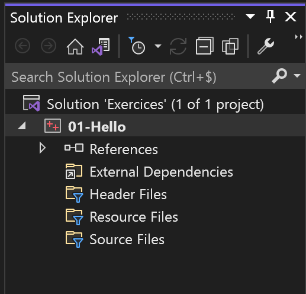

Visual Studio : Création d'une solution et d'un projet
Introduction
Visual Studio est un IDE (Integrated Development Environment) ou Environnement de développement. Il est pas mal apprécié chez les développeur pour la qualité de l'outil. Bien entendu à chacun ses amours, à chacun des outils. L'idée dans cette série de fiches c'est de donner deux trois conseils pour commencer à se servir de cet IDE notamment la création de projet (dans cette fiche), la compilation, le debuggage, etc...
Cette première fiche va nous guider dans la création d'une nouvelle solution Visual Studio dans lequel on pourra créer un ou plusieurs projets dans lesquels on pourra créer et écrire des fichiers sources. En premier lieu, il faut s'assurer que Visual Studio soit bien installé sur ta machine et que sa version soit en langue anglaise, parce que les snapshots qui seront montrés sont en anglais.
Création d'une solution
Pour commencer, il faut lancer Visual Studio, tu devrais arriver sur la fenêtre de lancement comme celle ci-dessous.
On va lancer Visual Studio à vide, c'est à dire qu'il faut cliquer sur continue without code -> en bas à droite de la fenêtre. On doit donc arriver sur la fenêtre principale de Visual Studio. Selon les thèmes graphiques, on doit avoir ce genre de fenêtre :
Maintenant, on va créer une nouvelle solution. Dans le menu en haut à gauche, cliquer sur le menu File, ensuite New et enfin Project.... Une nouvelle fenêtre pop-up apparaît. Dans cette fenêtre on veut créer une solution vide, on va donc taper dans la barre de recherche le mot clé suivant "empty solution" et normalement on devrait voir apparaître l'item "Blank Solution". Il faut sélectionner l'item et cliquer sur le bouton Next.
Une nouvelle fenêtre pop-up apparaît, cette fois-ci pour la création d'une nouvelle solution. Il faut donner un nom à la solution. Pour ma part j'ai donné le nom "Exercices". Le nom choisi correspond également au dossier qui va être crée du même nom. Il suffit juste de sélectionner le dossier dans laquelle la solution va être située. On peut la mettre dans un repository par exemple. Il faut maintenant cliquer sur le bouton Create. Un nouveau dossier apparaît au chemin qui a été donné et à l'intérieur de ce dossier, il devrait y avoir:
- [NOM_DE_LA_SOLUTION].sln
- un dossier caché appelé .vs contenant des options propres à la solution.
Création d'un projet c++
On a notre solution, maintenant il faut créer un projet à l'intérieur de cette solution. Avant de procéder, on va d'abord créer un nouveau dossier à côté de la solution appelé "Sources". Exemple :
C'est dans ce dossier qu'on va ranger tous les projets. Maintenant, on retourne dans Visual Studio et on va refaire la même manipulation que pour créer une solution, c'est à dire : File=>New=>New Project.... Cette fois-ci on va créer un nouveau projet c++, on va donc taper "empty project" et sélectionner l'item "Empty Project" en faisant bien attention que ce soit un projet c++ comme indiqué dans la description de l'item.

Si tu ne trouves pas, change le filtre "All languages" et sélectionne "c++" pour affiner la recherche. Si tu ne trouves vraiment pas, c'est peut être du à une mauvaise installation de Visual Studio, il faut bien vérifier que le pack de développement c++ a été installé dans le Visual Studio Installer.
Une nouvelle fenêtre pop-up apparait. Dans cette fenêtre, on va tout de suite changer le champs "Solution" en mettant "Add to solution" à la place. Dans le champs en dessous, on devrait avoir normalement le nom de la solution que l'on a créé, si ce n'est pas le cas, il faut la sélectionner. Ensuite il faut indiquer le nom du projet. J'ai donnée le nom "01-Hello" de mon côté, 01 faisant référence au premier projet créé, çà permet de classer les projets dans l'ordre temporel de création, à toi de voir. Enfin le chemin où se situe le projet doit être indiqué dans le champs "Location". Il faut donner le chemin vers le dossier "Source".
Attention, si tu changes le champs vers "Add to solution" après avoir rempli les autres champs, il réinitialise le champs "Location", on peut se faire avoir ^^.
Le dossier "Exercices" devrait maintenant contenir un sous dossier appelé "01-Hello" qui lui même devrait contenir 3 fichiers:
- [NOM DU PROJET].vcxproj => C'est là où sont indiqués les propriétés du projets (compilateur, les includes, les sources, les librairies, le options, ...
- [NOM DU PROJET].vcxproj.filters => Ce fichier définit l'arborescence du projet (comment sont rangés les fichiers). Par exemple, on peut mettre tous les fichier *.cpp dans le dossier filtre "Source Files" et les *.h dans le dossier filtre "Include Files". Attention, l'aborescence dans l'explorateur de fichier n'est pas automatiquement le même que l'arborescence dans le projet Visual Studio.
- [NOM DU PROJET].vcxproj.user => Ce fichier ne nous intéresse pas, il est là pour des raisons de compatibilité avec les anciennes versions de Visual Studio
Exemple chez moi:
Hello World
Il ne reste plus qu'à essayer de voir si tout marche bien. Dans Visual Studio, le nouveau projet doit apparaître dans la partie "Solution Explorer".
On va créer un nouveau fichier cpp pour afficher notre premier "Hello World". Il faut, pour çà, cliquer droit sur le dossier filtre "Source Files" et ensuite sélectionner Add=>New Item.... Une nouvelle fenêtre pop-up apparaît et normalement Visual Studio devrait directement orienter le choix de l'item sur "C++ File (.cpp)". Si ce n'est pas le cas, ce n'est pas bien grave puisqu'on va écrire le nom du fichier dans le champs "Name" en bas. Je propose d'appeler le nouveau fichier "main.cpp". Alors, attention, comme je l'ai mentionné avant, l'arborescence des fichiers est différente dans la solution et dans l'explorateur de fichier, c'est pour çà que je conseille d'organiser ses fichiers de la même façon des deux côtés (presque de la même façon). Dans le champs "Location", on va placer le fichier "main.cpp" dans "Sources/01-Hello/src". "src" fait miroir ici avec le dossier filtre "Source Files". Cliquer enfin sur Add.
Dans ce fichier "main.cpp", on va écrire le code suivant que tu dois bien connaître à force de la voir partout.
xint main(){ std::cout << "Hello World!" << std::endl;}
Pour finir cette fiche, il ne reste plus qu'à lancer l'exécution du projet. Il faut cliquer sur le bouton Local Windows Debugger en haut. Juste après un court moment de compilation, une console apparaît et nous fait un "Hello World".